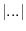
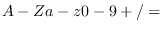

Subsections
Japanese characters are encoded in 16-bit, i.e. two bytes.
Inside EusLisp, there is no provision to handle Japanese 16-bit
character as a representation of Japanese. They are just regarded
as a series of byte-encoded characters.
The following code will print a Japanese character "AI" that
means love in English, if you are using a terminal
that can display EUC kanji, like kterm.
(setq AI-str
(let ((jstr (make-string 2)))
(setf (aref jstr 0) #xb0
(aref jstr 1) #xa6)
jstr))
(print AI-str)
In a similar manner, (intern AI-str) will create a symbol
with its printname "AI".
(set (intern AI-str) "love")
Conversion functions for different character codes and
Roman-ji representation are provided.
romkan romanji-str [function]
-
- Roman-ji representation is
converted into EUC coded Japanese.
Numbers are converted into pronunciation in hiragana.
romanji kana-str [function]
-
- kana-str which represents
Japanese in hiragana or in katakana coded in EUC
is converted into a roman-ji representation.
English alphabets and numbers are unchanged.
sjis2euc kana-str [function]
-
- kana-str coded in shift-jis
is converted into EUC.
euc2sjis kana-str [function]
-
- kana-str coded in EUC
is converted into shift-JIS.
jis2euc kana-str [function]
-
- kana-str coded in EUC
is converted into JIS coding, which enters kana mode by
ESC\$B and exits by ESC(J.
Note that there is no euc2jis function is provided yet.
kana-date time [function]
-
- time is converted a Japanese
date pronunciation represented in roman-ji. The default time
is the current time.
kana-date time [function]
-
- time is converted a Japanese
time pronunciation represented in roman-ji. The default time
is the current time.
hira2kata hiragana-str [function]
-
-
hiragana-str is converted into katakana representation.
kata2hira katakana-str [function]
-
-
katakana-str is converted into hiragana representation.
ICONV is a set of the gnu standard library functions for character
code conversion. The interface is programmed in eus/lib/clib/charconv.c.
iconv-open to-code from-code [function]
-
- returns a descriptor for
converting characters from from-code to to-code.
regmatch regpat string [function]
-
- searches for an occurence of a regular
expression, regpat in string.
If found, a list of the starting index and the ending index
of the found pattern is returned.
example;
(regmatch "ca[ad]+r" "any string ...") will look for cadr, caar, cadadr ...
in the second argument.
Base64 is an encoding scheme to represent binary data using only
printable graphic characters. The scheme is applied to
uuencode/uudecode. The following functions are defined in
lib/llib/base64.l.
base64encode binstr [function]
-
-
A binary string, binstr is converted to an ASCII string
consisting only of

letters
according to the base-64 encoding rule.
The resulted string is 33% longer than the original.
A newline is inserted every 76 characters.
One or two '=' characters are padded at the end to adjust the
length of the result to be a multiple of four.
base64decode ascstr [function]
-
-
An ASCII string, ascstr, is converted to a binary string
according to the base-64 encodeing.
Error is reported if ascstr includes an invalid character.
Linux and other UNIX employs the DES (Data Encryption Standard)
to encrypt password strings.
The function is provided in the libcrypt.so library.
lib/llib/crypt.l links this library and provides the following
functions for string encryption.
Note that the  key space of DES is not large enough to
reject challenges by current powerful computers. Note also
that only the encrypting functions are provided and no
rational decrypting is possible.
crypt str salt [function]
-
-
The raw function provided by libcrypt.so.
Str is encrypted by using the salt string.
Salt is a string of two characters, and used to randamize
the output of encryption in 4096 ways.
The output string is always 13 characters regardless to the
length of str.
In other words, only the first eight characters from str
are taken for encryption, and the rest are ignored.
The same string encrypted with the same salt is the same.
The same string yields different encryption result
with different salts.
The salt becomes the first two characters of the resulted
encrypted string.
rcrypt str &optional (salt (random-string 2)) [function]
-
-
The plain string, str, is converted into its encrypted
representation. The salt is randomly generated if
not given.
random-string len &optional random-string [function]
-
-
This is a utility function to generate a random string
which constitutes of elements in the random-string.
By default, "A-Za-z0-9/." is taken for the random-string.
In order not to make mistakes between i, I, l, 1, O, 0, and o,
you can specify *safe-salt-string* for the random-string.
compcrypt input cryption [function]
-
-
Input is a plain string and cryption is a encrypted
string. Input is encrypted with the salt found in the cryption
and the result is compared with it. If both are the same,
T is returnd, NIL, otherwise.
Travis CI User
2017-03-07